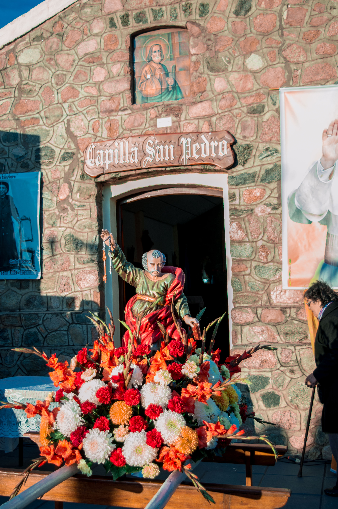
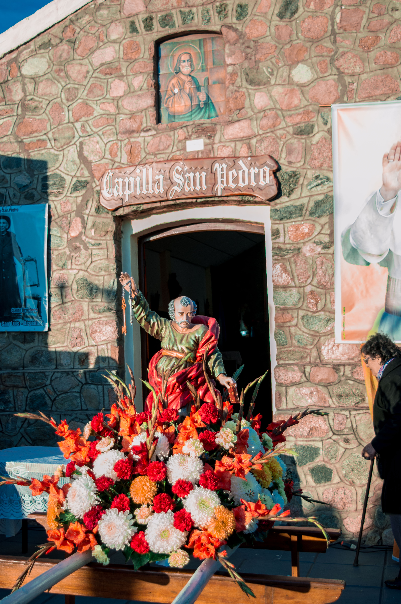

Entre sierras imponentes, el murmullo del arroyo y las palmeras Caranday, Papagayos te invita a vivir una experiencia única. Caminatas, miradores y paisajes que quitan el aliento te esperan para desconectarte del ruido y reconectarte con lo esencial.
Si ya conocés este paraíso, volvé a disfrutarlo… siempre hay algo nuevo que descubrir en Papagayos.
Mapa Interactivo
Explorá los principales puntos turísticos y de interés del pueblo.
Gastronomía Típica
Disfrutá de los sabores locales: comidas caseras, dulces regionales y la
calidez de su gente.
Sabores que cuentan historias
La gastronomía de Papagayos es un reflejo de su identidad serrana y de la calidez de su gente.
Entre aromas a leña y recetas transmitidas de generación en generación,
los visitantes pueden disfrutar de platos típicos que combinan tradición y sabor.
El chivo al asador es el gran protagonista, acompañado por el lechón crujiente,
las empanadas caseras y el clásico locro que reúne a familias y amigos en cada fiesta o encuentro.
Los sabores se completan con dulces regionales, pan casero y el inconfundible gusto de las hierbas y productos locales.
Comer en Papagayos es mucho más que una experiencia culinaria:
es saborear la esencia de las sierras y compartir la hospitalidad de su gente.
Naturaleza
Disfrutá de la paz y el contacto con la naturaleza.
Cultura y Fiestas
Fiesta Patronal de San Pedro Apóstol
Cada 29 de junio, Papagayos se viste de tradición y fe para honrar a su Santo Patrono, San Pedro Apóstol, en la encantadora capilla del pueblo y sus alrededores.
La celebración comienza con la santa misa en la Capilla San Pedro, seguida de una procesión que recorre las calles acompañada por la imagen del santo, oraciones y música local.
El momento festivo continúa con el tradicional desfile gaucho, donde agrupaciones de toda la región lucen sus vestimentas criollas y muestran con orgullo las raíces
de la cultura serrana. Luego, vecinos y visitantes comparten un cálido encuentro comunitario con chocolate y pastelitos, en un ambiente de alegría y camaradería.
Más que una celebración religiosa, esta fiesta es un símbolo de identidad para Papagayos: un puente entre la devoción, la tradición gaucha y el espíritu comunitario que caracteriza al pueblo.
Festival de la Palmera Caranday
Cada año, a comienzos de febrero, Papagayos se convierte en un escenario de música, danza y tradición con el Festival de la Palmera Caranday, una de las celebraciones
más esperadas del calendario provincial.
Durante dos días, la plaza central y el campo de doma se llenan de color con agrupaciones gauchas, espectáculos folklóricos, doma, tropillas, cuarteto, comidas típicas y
artesanías locales elaboradas con la fibra de la emblemática palmera caranday.
El festival reúne a familias, turistas y artistas en un entorno natural incomparable, entre sierras y palmeras, donde la música y la alegría se combinan con el orgullo
de pertenecer a una tierra que celebra sus raíces.
Más que un evento, es una auténtica experiencia cultural y turística que invita a disfrutar de la hospitalidad, la identidad y la magia serrana de Papagayos.


 
